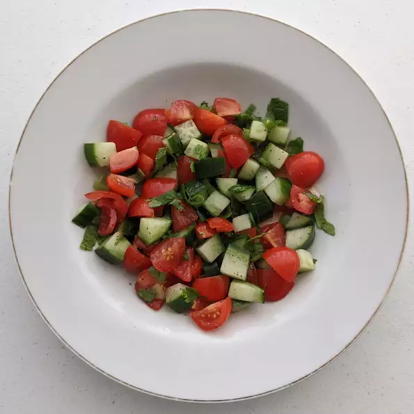

Tomato Cucumber Kachumbar

Description
Kachumbar is an Indian-style salad that is served on top of curry. Fresh herbs and lemon add a
tangy crunch that lightens even the most intense gravies.
Ingredients
- 1 cup halved grape tomatoes
- 1 cup diced cucumber
- ½ cup chopped green onions
- ½ cup chopped fresh cilantro
- 1 tablespoon fresh lemon juice
- 1 tablespoon chopped fresh mint
- salt and ground black pepper to taste
Recipe
- Mix grape tomatoes, cucumber, green onions, cilantro, lemon juice, mint, salt, and
pepper together in a large bowl.
Return to main page